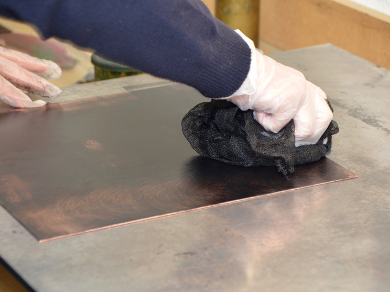
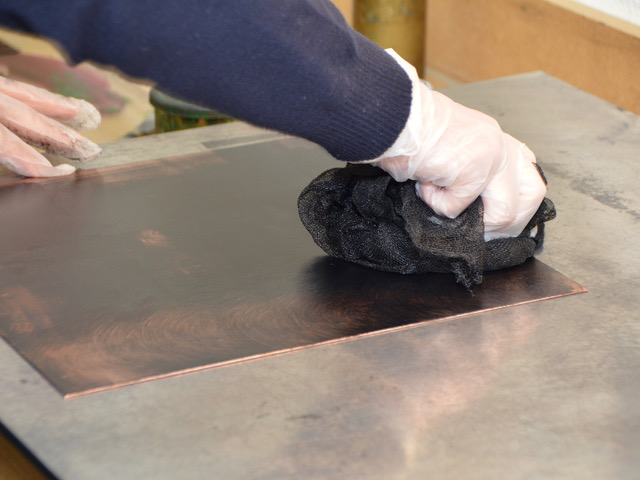
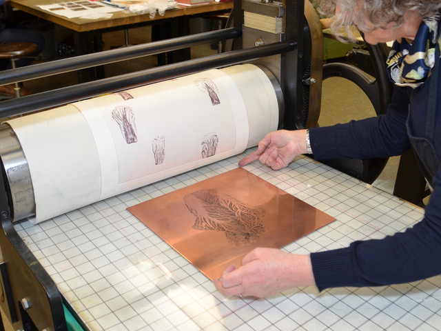
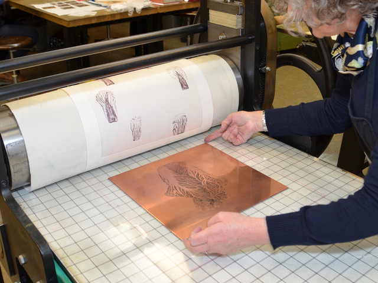

Kupferdruck · Radierung
Franziska Schiratzki
■■■ = noch fehlend/todo
■■■ TITEL
Kursbeschreibung
■■■ umarbeiten zu Textform ■■■
- Erlernen der technischen und handwerklichen Grundlagen des klassischen Tiefdrucks
- Kennenlernen der Eigenschaften und Anwendungsmöglichkeiten de Kupferdrucktechnik als bildnerisches Ausdrucksmittel.
- Prozesshafte Umsetzung an eigenen Arbeiten.
- Freies und individuelles Forschen und Experimentieren in Bild und Druck nach eigenen Inhalten, Themen, Vorlagen und Interessen.
- Selbstständige Realisation eines persönlichen Projektes vom Entwurf bis zum selbständigen Drucken einer kleinen Auflage.
- Förderung und Entwicklung einer eigenen künstlerischen Ausdrucksweise mit individueller Begleitung und Betreuung während des ganzen gestalterischen Prozesses.
- Professionelle Aneignung der nötigen technisch-handwerklichen Fertigkeiten von der Bearbeitung der Druckvorlage über den Umgang mit Material bis zum fachlichen Umgang mit Technik, Maschinen und Chemie.
Bilder

 

 


Gestalterische Fragestellungen und Prinzipien
- Bildentwicklung als Bildmetamorphose auf der immer gleichen Kupferplatte.
- Serielles Arbeiten zu einem ausgewählten Thema.
- Handwerk, Technik und gestalterischer Prozess werden Hand in Hand gelernt und angewandt.
- Bildfindung, Bildideen und Experiment entwickeln sich individuell, schrittweise und prozesshaft.
- begleitet wird individuell und persönlich
- es wird Bezug genommen zu klassischer und zeitgenössischer Druckgrafik
Kurzbio
Franziska Schiratzki · Website
■■■ umarbeiten zu Textform ■■■
1960
- geboren in Berlin
1981 - 1984
- Studium an der Universität Zürich, Ethnologie und spanische Literatur
1985
- Aufenthalt in Spanien, Sprachdiplom an der Universität Salamanca
1986 – 1990
- Kunststudium an der Ecole Supérieure d’Art Visuel, Genf Diplom in ‚expression graphique’
1990 – 1994
- Kupferdruckerin in den Ateliers:
- atelier de taille-douce et lithografie, St.Prex
- centre genèvois de la gravure contemporaine, Genève Atelier Peter Kneubühler, Zürich
Seit 1996
Lehrerin und Dozentin für Druckgrafik Schule für Gestaltung Zürich
- Schule für Gestaltung Basel
- Hochschule für Gestaltung und Kunst Basel
- Visarte Mitglied
- Eigenes Kupferdruckatelier in Zürich
Seit 1978
Ausstellungen im In- und Ausland
Interview
→ Kontakt mit Susanne Hauser Lendenmann herstellen.